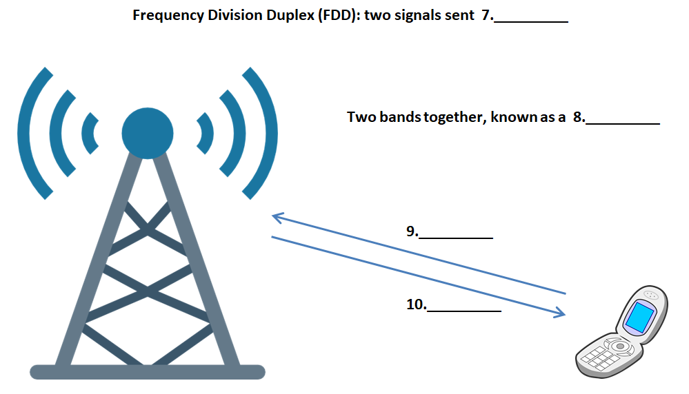

How Mobile Telephony Turned into a Health Scare

The technology which enabled mobile phones was previously used in the kind of two- way radio which could be found in taxis and emergency vehicles. Although this was a great development, it was not really considered mobile telephony because it could not be used to dial into existing phone networks. It was known as simplex technology, operating on the same principles as a walkie-talkie, which required that a user press a button, meaning that only one person at a time could talk. Simplex meant that there was only one communication frequency in use at any one time.
The first mobile phones to connect to telephone networks were often installed in cars before the hand-held version came on the market and the revolution in mobile technology began. The first generation of mobile phones (called 1G) were large, heavy and analogue and it was not until the invention of the second generation (2G) in the 1990s that digital networks could be used. The digital element enabled faster signalling. At the same time, developments in battery design and energy-saving electronics allowed the phones themselves to become smaller and therefore more truly mobile. The second generation allowed for text messaging too, and this began with the first person-to-person text message in Finland in 1993, although a machine-generated text message had been successfully sent two years earlier.
None of this would have been possible without the development of duplex technology to replace the relatively primitive simplex technology of the first phase of mobile communication. In duplex technology, there are two frequencies available simultaneously. These two frequencies can be obtained by the principle of Frequency Division Duplex (FDD). To send two signals wirelessly, it is necessary to create a paired spectrum, where one band carries the uplink (from phone to antenna) and the other carries the downlink (from antenna to phone).Time Division Duplex (TDD) can achieve the same thing, but instead of splitting the frequency, the uplink and downlink are switched very rapidly, giving the impression that one frequency is used.
For mobile telephony to work to its fullest potential, it needs to have a network through which it can relay signals.This network depends on base stations which send and receive the signals. The base stations tend to be simple constructions, or masts, on top of which are mounted the antennas. With the rapid increase in demand for mobile services, the infrastructure of antennas in the United Kingdom is now huge.
Many thousands of reports have appeared claiming that the signals relayed by these antennas are harmful to human and animal health. The claims focus on the fact that the antennas are transmitting radio waves in microwave form. In some ways, public demand is responsible for the increase in the alleged threat to health. Until quite recently, voice and text messages were transmitted using 2G technology. A 2G mast can send a low-frequency microwave signal approximately 35 kilometres.Third generation (3G) technology allows users to wirelessly download information from the internet and is extremely popular. The difference is that 3G technology uses a higher frequency to carry the signals, allowing masts to emit more radiation. This problem Is intensified by the need to have masts in closer proximity to each other and to the handsets themselves. Whatever danger there was in 2G signals is greatly multiplied by the fact that the 3G masts are physically much closer to people.
Government authorities have so far refused to accept that there is a danger to public health, and tests carried out by governments and telecommunications companies have been restricted to testing to see if heat is being produced from these microwaves. According to many, however, the problem is not heat, but electromagnetic waves which are found near the masts.
It is believed that some people, though not all, have a condition known as electro- sensitivity or electro-hypersensitivity (EHS), meaning that the electromagnetism makes them ill in some way.The actual health threat from these pulsed microwave signals is an area which greatly needs more research. It has been claimed that the signals affect all living organisms, including plants, at a cellular level and cause symptoms in people ranging from tiredness and headaches to cancer. Of particular concern is the effect that increased electromagnetic fields may have on children and the fear is that the negative effects on their health may not manifest themselves until they have had many years of continued exposure to high levels. Tests carried out on animals living close to this form of radiation are particulady useful because scientists can rule out the psychological effect that humans might be exhibiting due to their fear of possible contamination.
Of course, the danger of exposure exists when using a mobile phone but since we do this for limited periods, between which it is believed our bodies can recover, it is not considered as serious as the effect of living or working near a mast (sometimes mounted on the very building we occupy) which is transmitting electromagnetic waves 24 hours a day.
Questions 1 -6
Answer the questions below.
Write NO MORE THAN THREE WORDS for each answer.
1 What were early two-way radios unable to use?
2 What did you have to do in order to talk on a radio using simplex tech?
3 Where were early mobile phones generally used?
4 What development introduced digital technology into mobile telephony?
5 Apart from the area of electronics, in which area did developments help make phones more mobile?
6 What type of text message was the first one ever sent?
Questions 7-10
Complete the diagram.
Choose NO MORE THAN TWO WORDS from the passage for each answer.
Frequency Division Duplex (FĐ) two signals sent 7
Two bands together, known as a 8

9
10
Questions 11-13
Choose the correct letter, A, B, C or D.
11 3G technology is believed to be more of a threat to health because
A the signals are transmitted over much greater distances than before.
B the masts are closer together and emit higher frequencies.
C the signals are carrying both voice and text messages.
D the modern handsets needed emit more radiation.
12 Why might the testing of animals give us more reliable results?
A because most of them live closer to the masts
B because they are continually exposed to higher levels of radiation
C because they are not affected at a cellular level
D because they are not afraid of the effects of radiation
13 What is believed to limit the danger from mobile phones?
A not using them continuously
B turning them off when not in use
C mounting a mast on the building where you live or work
D keeping healthy and getting enough sleep
---End of the Test---
Please Submit to view your score, solution and explanations.